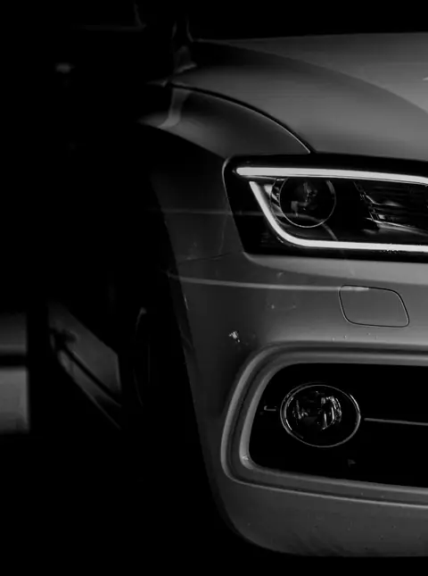

Martor aprins continuu sau care clipește
Dacă martorul stă aprins continuu și mașina merge normal, poți ajunge la service, dar programează o diagnoză în zilele următoare. Dacă martorul clipește, motorul are de obicei rateuri. Redu viteza, evită accelerările și oprește cât mai repede, pentru că benzina nearsă poate distruge catalizatorul.
Cauze frecvente
- Sonda lambda sau senzorul de debit de aer
- Bujii sau bobine de inducție uzate
- Supapa EGR sau filtrul de particule, la motoarele diesel
- Scurgeri de vacuum sau un buson de rezervor neetanș
De ce nu ajută ștergerea erorii
Un tester ieftin poate stinge martorul, dar eroarea revine dacă defectul rămâne. În plus, ștergerea elimină și datele salvate în momentul defectului, care îl ajută pe mecanic să găsească mai repede cauza.
Ce primești la diagnoză
La AutoRepublic citim codurile de eroare, urmărim datele senzorilor în timp real și verificăm fizic componenta suspectă. Îți spunem cauza, ce e urgent și cât costă reparația, înainte să începem.